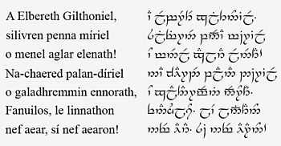

Эльфийские языки
Квенья (Quenya) — искусственный язык, разработанный Дж. Р. Р. Толкином. В легендариуме представляет собой один из эльфийских языков — речь нолдор и ваньяр.
Слово «квенья» переводится как «наречие, язык» или, в противоположность другим языкам, «эльфийское наречие, эльфийский язык».

Синдарин (кв. Sindarin; самоназвания нет, сами эльфы часто называют его просто синд. Edhellen, то есть «эльфийский») — один из вымышленных языков, разработанных Дж. Р. Р. Толкином. В легендариуме представляет собой один из эльфийских языков — речь синдар.
Толкин в создании синдарина основывался на валлийском языке, он обладает особенностью — мутациями согласных, подобно кельтским языкам. Также синдарин испытал влияние древнеанглийского и древнескандинавского языков.
Слово синдарин переводится с квенья как «серое наречие».
Называемый языком «серых эльфов», синдарин являлся основным наречием синдар. Они были эльфами из племени тэлери, оставшимися в Белерианде во время Великого похода. Их язык стал отличаться от языка эльфов других племён, которые уплыли за море. Синдарин берёт своё происхождение из более ранней формы языка, называемой общий тэлерин, который, в свою очередь, произошёл из общеэльфийского языка эльдар до их разделения.
В Третью Эпоху (см. «Властелин колец») синдарин был основным языком общения эльфов западной части Средиземья. Именно синдарин — тот язык, который во «Властелине колец» назывался эльфийским.

наверх